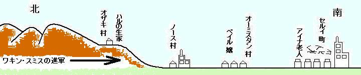
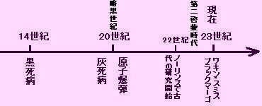
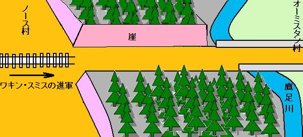

登場人物
ワキン・スミス ノーリンズの帝王
ブラック・マーゴ マーガレット王女
レボー 王女の警護司令官
ソラ 王女の下女
ハル・タービッシュ 旅する男
マーケス 長老
ベイル 長老の娘
イナック ベイルの恋人
マーティン 不老不死の発見者
ホランド 古語を解読
テラン 発電所を再起動
オーリン アイナ・オーリン
コーマー イオンビームを発見
ファイル 鍛冶屋
ジョーガンスン 王女の愛人
［＃改ページ］
［＃ページの左右中央］
この物語で話されるマーガレット王女の会話はすべて一語残らず、186年アーブズ市で出版された『ブラック・フレームの恋』という作者不詳本から引用した。出処はブラック・フレームの警護司令官ジャック・レボー。
［＃改ページ］
第１章 世の中
ハル・タービッシュが後ろを振り向いたのはたった１回、それも曲がり角に差しかかったときだけだった。へばりつくような石小屋が長年の住まいであり、何千回も見飽き、杉の木の下にちょこんとある。
母はまだ見送っている。２人の弟が山腹からじっと見下ろしている。ハルが別れの手を振って、おろした時はもう誰も見ていなかった。母は何事もなかったかのように扉に向かい、弟たちはウサギを追っかけている。
ハルは前を向いてずんずん進み、坂を下り、オザキ村をあとにした。
事情はハル・タービッシュもよく知っている。というのも毎晩、
こうしてハルは口笛を吹き、ずた袋を肩にかけ、弓を広い背中にゆったりくくり、てくてく歩いた。盆地を目当てに行く理由があった。世の中がどんなものか見たかった。
ハルはじっとしておれる性分じゃない。タービッシュ家の６人の息子や３人の娘とは全く違っていた。一家は芯から山の民で、息子たちはマタギ、娘たちは愚鈍で働きものだった。ハルはしかし、兄弟のようにものぐさじゃなく、姉妹のように愚かじゃなく、活発で好奇心にあふれ、夢見る男だ。というわけで口笛を吹きならし、世の中に飛び出し、うきうきだった。
夕刻、
ハルは弓を

 離れりゃ何も怖くない。
離れりゃ何も怖くない。朝、ホーベル家にさよならした。同家の人々は、よくあることだが、ハルがちょっとおかしいんじゃないかと思った。
そして出発。
これ以上気持ちのいい世界はないとニヤニヤしながら口笛を吹き、慎重に道端に
そのときがきた。
今着いた所は平地、木々は
不意に１人の男、いや２人の男が路肩の丸太から立ち上がり、ハルに近づいてきた。見ると、１人は長身、ハルと同じ銀髪、しかし体は細い。もう１人は短髪、黒毛。盆地の人間に違いない。というのも黒髪の男がベルトにずんぐり拳銃を１丁ぶら下げ、木製
黒髪の男が言った。
「ほう、山の衆だな。どこへ行く」
「ノース村だ」
「袋の中は何だ」
「食い物だ」
長身の銀髪が因縁をつけた。
「そこでじっとしてろ。
「何とだ？」
「胃袋に鉛だ。ナイフをよこせ、それに袋もだ」
と黒髪がすごみ、さっと野暮な拳銃を構えた。
ハルは２人を交互にらみつけた。やれやれと両肩をすくめ、肩から袋を持ち上げるふり。
その刹那、ガラガラヘビが攻撃するように、さっと左足を前に蹴り出し、黒髪のみぞおちを直撃、強靭な脚力と全体重を加えた。
黒髪がうめき声を上げ、腰が２つに折れて倒れると、銃が３
飛んで泥に落ちた。銀髪が銃に飛びついたが、ハルが強力な腕力でハルはゆっくりとノース村に向きをとり、
小高い坂に上がると、眼前に村があった。じっと見た。最低百戸はある。おそらく５百人ぐらいの人口だろうが、生まれてから今まで出会った人数を足したよりずっと多い。
ずんずん進むと、眼をみはるような教会が巨木のようにそびえ立ち、窓々が古代の
ハルに注目するものはほとんどいない。ノース村民にとっては山の民はおなじみだったので、かろうじて女が１人か２人、ハルの巨体を品定めするのみであった。しかしハルには不愉快で、
ハルはノース村には世話にならないと決めた。日没になると家々がくっつきすぎているように見え、息がつまりそうだったので、野宿するために村はずれに出た。古代市街の残骸で村は区切られており、おばけのような壁が崩れていた。
ここは当然廃墟だから更に歩き、森林地帯を見つけ、横になり、弓と鉄製の矢を袋に入れ、夜露に濡れて錆びないようにした。その袋を裸足に結びつけ、大の字になり眠ったが、手は拳銃を握ったままだった。もちろん、この森にはオオカミ以外、凶暴な動物はいないし、温暖期に人を襲うことはないが、人間はそんな季節条件に縛られない。
露に濡れて眼が覚めた。陽光が木々からこぼれ、腹ペコだった。母が作ってくれた最後の黒パンを袋から出して食べた。パンは足元で砕けていた。
そして道へ繰り出した。そこへ荷馬車がキーキー言いながら北からのこのこやってきて、
「山の衆か」
「そうだ」
「どこへ行く」
「世界だ」
「そうか。広いところだぞ。わしが見た全部がそんな風だった。ただセルイ町は別じゃ。あれは町だ。そうだよ。町じゃ。行ったことがあるか」
「いいや」
農夫が感慨深げに言った。
「人口は２万人じゃ。もっとかもな。でも壊れており、とてつもなくでかい。橋や建物がノース村教会の４〜５倍も高く、しかも崩れている。昔はどれくらい高かったか想像もつかん」
「誰が住んでいたんだ？」
「知らん。誰があんな高い所に住みたいか、登るだけで午前中いっぱいかかっちまう。魔法でなきゃ。魔法なんぞくそくらえ。古代人は空飛ぶ方法を知っとったそうじゃ」
ハルは想像をめぐらした。しばらく２人は黙っていた。ただ馬のひづめのパカパカ音だけがのんびり聞こえた。
ようやくハルが口を開いた。
「信じないぞ」
「ああ、わしもだ。しかしだな、ノース村で噂を聞いたろ」
「何も」
「ワキン・スミスがまた進軍してくるそうだ」
「ワキン・スミスか」
「ああ、山の衆でも知ってるだろ」
「知らないでか。それじゃ、南方で戦いがあるな。南へ行ってみよう」
「何でだ？」
「戦いが好きだからさ」
「もっともだ。だが人の話では帝王が進軍すれば大した戦いはないそうだ。帝王には魔力がある。ノーリンズ町には偉大な魔術があってな、ちんけな魔法使いから、マーティンまで勢揃いだ。マーティンは悪魔の申し子だそうだ」
ハルが大真面目に言った。
「帝王の魔術をマタギの弓や
の距離でもライフルを使えばだ」「違いねえ、でもな、帝王が地平線に現れる前に、火薬が火を噴いたり、銃が爆発したらどうだい。そんな魔力があるというぞ、帝王やブラック・マーゴには」
「ブラック・マーゴって？」
「王女だ。帝王の
「ほう、なんでブラック・マーゴ？」
農夫が両肩をすくめ
「知るか。敵がそう呼んでいる」
「じゃあ、俺もそう呼ぼう」
「ああ、勝手に。わしにゃ、ノーリンズ帝王に税を払おうが、がめつい老マーケスに払おうがたいして違いねえ。マーケスはあそこのオーミスタン村の長老だがね。わしゃ、農産物を帝国内の町々に売ってるんじゃ。帝国民はわしらと同じように幸せそうじゃよ、まったく」
と言って
「でも違いがある。自由だ」
「単なる言葉だよ、お前さん。やつらも耕し、種をまき、刈る、わしらと同じだ。狩りをし、釣りをし、ケンカをする。それに自由だって、魔法使いに従う帝国民のほうが、バカ長老に従う俺より、不自由ってか」
「山の民は税金を誰にも払わない」
「それじゃ、道路はつくれないし、共同井戸も掘れない。払い少なくして得るもの少なし。帝国内の道路はここよりずっといいぞ」
「これよりいいのか」
とハルが聞き、道路一面の土砂をじっと眺めた。
「ずっといい。メンフィス町あたりの道路は固い石だ。柔らかいものをまいて、魔法で固くする。だから泥や土砂はない」
ハルは思いを巡らし、突然大声を出した。
「帝王はほんとに不死身なのか」
相方が両肩をすくめ、
「なんでわしが言える。南方には偉大な魔法使いが何人もいる。最高クラスがマーティンだ。まあ、わしの知る限り、62年間見てきたが、記憶をたどれば、南方は常にワキン・スミスが君臨し、帝国が町々を飲みこんでいることじゃ。
ハルの返事はない、というのもオーミスタン村がすぐそこだったからだ。オーミスタン村はノース村とよく似ているが、違いは低い丘の上に密集しており、丘のてっぺんに古代遺跡がちらほら見えることだ。
近くで連れの農夫が止まり、ハルは礼を言って、地上に飛び降りた。
農夫が訊いた。
「どこへ行く？」
ハルはちょっと考えて、
「セルイ町だ」
「そうか、２百
だ、乗り出があるぞ」「自分の足がある」
不意に声がして辺りを見回すと道の向うから、
「はーい、山の衆」
女だった。とてもかわいい女、腰が細く、茶髪、青い目だ。石造りの豪邸の玄関に立っている。
「はーい。夕食のお駄賃にお仕事しませんか」
ハルは又しても腹ペコだった。
「ありがたい」
うしろから農夫の声、
「その子はベイル嬢だ。老いぼれ長老の娘だよ。山の衆、夕食のやっかいになれ。俺の税金はその為に払っている」
ともかくも、ベイル嬢はこの放浪の山男と、大いに話をした。ハルのたくましい体を満足そうに検分し、丸太をマキ割りするように言って家の中へ消えた。
ひょっとしたら、古代ガラスの透明な窓を通して覗いているかもしれない、そして斧をふるう時、ムキムキの上腕筋が躍動するのを眺めているかもしれないが、知るよしもない。
というわけでその日の夕刻、セルイ町へ向かうハルの胃袋には心づくしの夕食、ポケットには３枚の銀貨、古代銀貨の女神像はほとんど擦り切れていた。

第２章 アイナじいさん
セルイ町に３週間もいればハル・タービッシュにも現地の話し相手ができる。もう古代都市跡の雲突く残骸や、巨大な崩壊橋にも驚かず、そばにあっても心穏やかだ。
簡単にパン屋の仕事が見つかり、強靭な肉体でよく働いた。労働時間は長いけど、賃金は高く、週給５銀貨だ。宿賃が２銀貨、食費はと言うと、焼けたパン塊が手元にあるから食費は１銀貨、従って２銀貨の貯えが残る。賭け事はめったにやらず、時たまやるのは自分の弓術だけ、これがまたほかの何より儲かった。
いつもハルは友達を作るのが早いのだが、長労働の為出来なかった。友達はたった１人しかできず、しかも相当な老人で、夜な夜なハルの宿屋の向こう階段に座っているアイナじいさんだ。
だから今晩もいつものようにふらっと会って、日没に映える古代遺跡の崩壊塔を一緒に眺めていた。木々が繁り、あたり一面、緑なのはツル草や風媒花が成長したもの。誰も廃墟の中に家を建てるものはいない。というのも塔がいつ崩れ落ちるか分からないからだ。
ハルがアイナじいさんに訊いた。
「古代人ってどんなふうだったんだろう。我々のような人間だったのだろうか。なら、どうやって空を飛べた？」
「我々のような人間だよ、ハル。飛行はだな、わしの考えでは伝説じゃ。こう考えてみ。男が１人、風で吹き飛ばされたと思いな、寒帯から北へ南へ、そして大海を越えた。それでこの飛ばされた男は何らかの理由でリンドバードとかバードとか言われるようになって、いつしか伝説になった。鳥の渡り、つまり毎年、島や海を旅する者だ、それだけのことじゃ」
「もしくは魔術？」
とハルが誘導。
「魔術じゃない。古代人自らが否定している。わしが長年取っ組んでいるのが奇妙な古語で書かれたカビ臭い本だよ」
アイナ老人はハルが初めて出会った学者だった。第２啓蒙時代と呼ばれる輝かしい幕開け時代に学者が輩出し、ほとんどはまだ帝国内に存命だ。ホランドは死んだが、オーリンはこの世に生きている。それに、コーマー、ジョーガンソン、テラン、マーティン、ワキン・スミス帝王もだ。偉大な名前、半神半人の名前だ。
でもハルはこれらの名前をほとんど知らない。
「じいさんは古語が読めるんだ。それ自体、一種の魔術だ。それに帝国の、しかもノーリンズ町に住んでいた。教えてくれ、大都市はどんな風？ 本当に古代の秘密を解いたの？ 不死身と言うのは本当に不老不死なの？ どうやって秘密を解いた？」
アイナ老人は階段に腰掛けて青い煙をスパスパ。キセルに詰めたのは土地の刻み煙草。
「質問が多すぎて答えられん。世界の本当の話をしようか、ハル。歴史という物語じゃ」
「はい。オザキ村ではそんな話は全然無かった」
老人は機嫌よく言った。
「それじゃあ、始めるけども、我々には開始なれども、古代人には終末だ。どんな要因、戦争、混乱があったか知らないが、強大な世界が暗黒世紀に滅びてしまった。でも、３百年前に世界は最高潮に達していたことを知っておる。そんな場所は想像もできないだろう、ハル。巨大都市時代だ。ノーリンズ町の50倍、10万人がいた」
老人はゆっくり煙をふかして続けた。
「大きな鉄の荷馬車が古代鉄路をゴーゴー走った。人々は大海を西へ東へ渡った。都市は車輪がひしめき、今の小さな都市連合と違って、何千という都市と１億から１億５千万人の人口を抱えた巨大国家があった」
ハルはびっくりして、
「世界にそんなたくさん人間がいるとは信じられない」
アイナ老人が両肩をすくませ、煙をスパスパ吐いて言った。
「誰が知るか。古代の本はとても希少で、それによれば世界は丸く、海の向こうに１つ、いやいくつか大陸があり、どんな種族がいるか、ワキン・スミスですら言えない。まあ、古代世界はこんなもんだ。みな軍事国家だから戦いが好きで、戦争は恐ろしいという本をたくさん書いて平和を維持しようとしたが、いつも失敗した。
20世紀と呼ばれる期間に一連の全面戦争があった。小競り合いじゃないぞ、例えば都市連合のいつものいさかいとか、メンフィス連盟と帝国の５年前の戦いどころじゃない規模だ。やつらの戦争は
を飛び、大海には戦艦が浮かび、そのうえ毒ガスまで使った」「どんなガス？」
老人が片手を振ると、風がハルの褐色の
「ほれ、空気はガスだ。やつらは空気の汚染方法を知っており、吸ったものはみんな死んだ。しかも細菌戦争のほかに、伝説では翼を持ち、空中でも戦ったというが、これは単なる伝説だ」
「細菌だって。細菌は悪魔の息だ。もし悪魔を
老人は再び同じ事を言い、再開した。
「魔術なんかない。細菌でどう戦ったかは知らないが、ノーリンズ町にいるマーティンは知っている。マーティンの研究成果であり、わしのじゃないが、そこに魔術がないことは知っている。
だから、古代の凶暴国家はお互い夢中になった。というのも今の我々より、戦う以上の意味があったからだ。我々にとっちゃ、戦いは荒っぽい楽しい危険な試合のようなものだが、古代人にとっては情念だった。どんな原因でも戦ったし、戦いが好きという以外何もない」
「俺も戦いは好きだ」
「ああ。でも、地平線のかなたにいる何千人もの人間を皆殺しするのが好きか。一回も会ったこともない人間をだぞ」
「いや、戦いは男同士だ、少なくともライフルの
「その通り。20世紀終わりごろになると、古代世界が戦争に突入した有り様は、まるで火薬袋に火がついたかのようだった。言わば、全国家が戦い、戦火は海洋や大陸中あちこちに広がった。国家対国家だけでなく、人種対人種、つまり黒人、白人、
「黄人、赤人って？ オザキ村にはニグと呼ばれる黒人は少しいたが、黄人とか赤人は聞いたことない」
「黄人は見たことがあるぞ。黄人の住む町はいくつか西海の端、フリスキアというところにある。赤人は噂によれば病気で絶滅した。その病気は灰死病と呼ばれ、この病に対し赤人は他の種族よりとても弱かった」
「灰死病は聞いたことがある。子供のころ、老人がよく言ってたが、老人の祖父は
「ハハハ、どうだか、ハル。２世紀半も前のことだぞ。しかし、偉大な古代国家は戦争状態になり、前に言ったように細菌も攻撃に使った。国家の中で灰死病の秘密を解いた国があったかどうか、あるいは２つ以上の細菌が
マーティンによれば細菌は生き物だというから、そうかもしれない。いずれにしろ、灰死病が突然世界中に飛び火して、全人類を一様に直撃した。あらゆるところで軍隊、都市、地方を壊滅させ、10人中６人が死んだ。世界中が大混乱したに違いないが、当時の印刷本は一冊もないし、わずかに伝説が語るのみだ。
こうして、戦争は
「止まった原因は？」
「さあな。伝染病は止まった。
まだその影響は始まりに過ぎなかった。古代の輸送網は簡単に壊れ、都市は
毎年毎年都市は荒廃し、遂に灰死病の50年後には世界人口の４分の３が失われ、文明が終わった。いまや世の中を支配しているのは野蛮だが、野蛮というだけで、未開というわけじゃない。人々はまだ強力な古代文明を覚えており、古代国家に再統合しようとしたが、指導者がおらず
「失敗してくれたので、いま自由がある」
「たぶんな。
「でもノーリンズ町で研究していたのでは？」
「そうだ。そこを話そう。
ホランドは珍しい人でな、研究熱心だった。古代図書の残骸を見つけ、焼け残った数少ない本で古語を解読し始めた。少しずつ人が集まり、話がだんだん広まるにつれて、いろんな部門の人々が本に興味を持ち、学会が誕生した。もちろん誰も教えない。単なる学生集団で、一種の共同生活、修道生活だった。
古代知識を実用化するつもりはなかったものの、やがてテランという若者が夢、それも全くの夢物語に過ぎなかったが、ノーリンズ町にあった何世紀も経た古い発電装置を再起動して、張り巡らされた電線で町に電気を供給しようとした」
「なにそれ。何ですか、アイナじいさん」
「君には分かるまい、ハル。テランは熱中した。やっと分かったことはこの機械を動かすには石炭も石油も要らない。こけの一念で、動力が必要なら既に備わってるだろうと思い、弟子たちと洗浄、さび落とし、
電気はオーリンという男の
マーティンは天才だ。医学研究に素質を発揮し、10年もたたず硬エックス線の秘密を明らかにした。不妊を研究していたが、不死を発見してしまった」
「だから、不老不死なのか」
とハルがつぶやいた。
「かもな、ハル。少なくともやつらは歳をとるように見えん……。ところでワキン・スミスも天才だぞ、違った分野のだ。やつの夢は地方の人々を再統合すること。もっとでかい夢だと思うな、ハル。噂では都市を百ヶ所征服したら止めるだろうというが、わしはアメリカ帝国を夢見ていると思う。つまり……」
と言って、アイナ老人が声を落とし、
「世界帝国だ。とりあえずマーティンの不死を奪って、電力と交換した。第２啓蒙時代が始まり、ノーリンズ町には天才たちが続出。この不死をコーマーの武器と交換した。その武器とオーリンの原子力を交換しようとしたが、オーリンはもう若くなかったので拒絶した。理由の一端は不老不死が欲しくなかったか、あるいはワキン・スミスと心情が一致しなかったかだ。そこで帝王はオーリンから原子力の秘密を盗んで、征服を開始した。
ノーリンズ町はすっかり帝王の人たらしに惑わされ、降伏の下地ができており、歓呼して迎えた。軍隊を組織し、北方へ進軍し、いずれの都市もやられるか、喜んで降伏した。ワキン・スミスは魅力的で、人々が周りに集まり、都市は歓迎し、殺された男の妻子までが忠誠を誓う始末、
「それが山の衆だよ、じいさん」
「その山の衆ですら、コーマーが古代本で発見したイオンビームには耐えられないし、アーデン共鳴器にも耐えられない。何
先から火薬を爆発させる。ワキン・スミスは成功するぞ、ハル。さらに、全く悪いことだとは思わん。なぜなら偉大な統制者でもあるし、文明の伝搬者でもあるからだ」「不老不死身の人たちはどんな風体？」
「そうだなあ、マーティンは岩のように冷たく、マーガレット王女は黒い炎のようだ。老骨のわしですら見るだけで若返る。
ワキン・スミス帝王は複雑な性格で、表現する言葉を知らないが、昔からよく知っておる。どちらかというと温厚だが、とても強くて、親切で、目的に応じて残酷にもなり、輝くほど知的で、危険なほど魅力的だ」
「じいさん知ってるんだ。じいさんの姓は？ アイナじいさん、不老不死を知ってるな」
「ハハハ、わしが生まれたとき、両親はアイナ・オーリンと名付けた」

第３章 帝王の進軍
ワキン・スミスが進軍してくる。
ハル・タービッシュがオーミスタン村の
オザキ村はもともと山衆とハルの居場所だが、騎兵がセルイ町へ情報を届ける頃、つまりハルがオーミスタン村についた頃にはもう手遅れで、オザキ村など帝国の拡張には
セルイ町は降伏しようとしなかった。セルイ連合は成立してまだ３か月、この連合に派遣された兵士の出身地はブルームトン、カイロ、遠方のシカゴ、シカゴは淡水海ミッチンの岸にある。連合軍の連中は
というのも
ハルの確信ではこの先、戦いがあり、楽しみだ。残念
いまは自分の
のどかな田園をじっと眺めていた。ワキン・スミスが進軍してくるのに、村の向うでは農夫がまだ畑で働いている。
これが 土に欲しい もんだよう
まずは スキとタネ だよう
つぎに マグワと鍬 だよう
そして みのりの雨 だよう
これが 男に欲しい もんだよう
まずは 約束と実行 だよう
つぎに 弓矢とヤイバ だよう
最後に 墓掘りのシャベル だよう
これが 女房に欲しい もんだよう
まずは 草のない庭 だよう
つぎに 娘と息子 だよう
そして 仕事上がりの暖炉 だよう
これが 息子の欲しい もんだよう
まずは スキとタネ だよう
つぎに マグワと
そして みのりの雨 だよう
これが 男に欲しい もんだよう
まずは 約束と実行 だよう
つぎに 弓矢とヤイバ だよう
最後に 墓掘りのシャベル だよう
これが 女房に欲しい もんだよう
まずは 草のない庭 だよう
つぎに 娘と息子 だよう
そして 仕事上がりの暖炉 だよう
これが 息子の欲しい もんだよう
ハルは聞くのをやめた。農夫たちは歌っているがワキン・スミスが進軍中で、数百都市の兵士と、黒旗と黄金
「いやだ、自由がずっといい。ミッドガード大蛇の頭を吹き飛ばしてやる」
横から声がした。
「ハル、大男のハル・タービッシュ。お高くとまりすぎて、庶民には気がつかないの」
ベイル嬢だった。スミレ色の虹彩が、滑らかな茶髪の下で
２日前の夜を楽しく思い出した。あの時、座ってたっぷりベイル嬢と３時間話し、ベンチの傍らの木がベイル嬢を隠してくれた。
さらに思い出したのが畑を歩いていた時のこと、見せてくれたのは口を開けた古代の大きな雨水管で、廃墟都市の地下にもぐり、いまボロボロだが何
も地下を丘のほうへ伸びており、ベイル嬢が語った話はというと、子供のとき雨水管の中で迷子になったことがあって、そのため父親が黒イチゴをいっぱい植えて、今は入口を隠してあるとか。ハルがニヤリ、
「長老の娘が庶民だと言うのかい。これを聞いたら、きみの父さんは俺に２倍の税金を掛けるよ」
ベイル嬢が、茶髪にかぶった帽子を取って、目をくりくりさせ、
「父があなたの派手なセルイ服を見たらそうするよ。誰に見せる為にそれを買ったの、ハル。お金は節約した方がいいよ」
「銀貨を惜しむと運が逃げる。とにかく、きみの笑顔のほうがお金の輝きよりずっといい」
とハルが反論。もうベイル嬢と話すのはそれほど難しくない。
「ふふふ、馴れるのが早いね、ヤマ男。ぼろ服のほうがいいと言ったらどう。あなたの強力な褐色筋が躍動するのを、破れ穴から見るのよ」
「言ったな、ベイル」
「なら、どうするの」
ハルが含み笑いして、太い両腕を両肩の上に差し上げてバンザイした。ビリッと服の裂ける音がして、セルイ服の背中に長い裂け目が見えた。
「どうだ、ベイル」
「まあ、ハルのろくでなし。でもちょっと裂けただけね。私に縫わせて」
とベイル嬢が息をのみ、腰の手提げをまさぐった。
ベイル嬢がハルの背中にかがみこんだ。まさしく背中に感じた
「今晩また話したい、ベイル」
ハルは背中に笑いを感じた。ベイル嬢が小声でつぶやいた。
「そうしてくれる？」
「ああ、もし
「でも、申し込んだのよ、ハル」
ハルは、わざとからかっているのを知りながら、残念、と短く言った。
「でも、忙しいと言って断ったのよ」
「じゃあ、きみは？」
ささやくような声が背後から、
「ダメよ、私に言わない限り、ダメよ」
「ハハハ、じゃあ、申し込むよ、ベイル」
縫い目が引っぱられるのを感じ、ベイル嬢が首の近くに寄りかかって来たのは、糸を白い歯で噛みきるためだった。陽気に言った。
「いま縫ったからまた新品よ」
ハルが礼をいう間もなく、ファイル鍛冶屋のハンマー音がして、ドラ声の鍛冶歌が聞こえた。２人が耳を澄ますと、響き渡る
ほうれ ほーほーほー
歌え カンカンカン
打てよ 打て打て
鉄がバターになるまで
鍛冶屋のどら声吹きまくれ
悪魔が降りて騒ぐよに
低ーく 低ーく
悪魔が降りて騒ぐよに
歌え カンカンカン
打てよ 打て打て
鉄がバターになるまで
鍛冶屋のどら声吹きまくれ
悪魔が降りて騒ぐよに
低ーく 低ーく
悪魔が降りて騒ぐよに
ハルが笑いながら渋々、
「ハハハ、行かなくちゃ。すぐやる仕事がある」
「ファイル鍛冶屋は何を作っているの」
一瞬にしてハルの笑顔が消え、
「剣を鍛えている」
ベイル嬢もまた、陽気な娘でなくなった。２人の上に影が差した。帝国の影だ。オザキ村の青い丘の
夜、ハルはベイル嬢の茶髪を照らす銅色の月をながめながら、ベンチに寄りかかっていた。今回は支柱のそばで１人ぽっちじゃない。微笑み合う相手がいる。
そういう状態で２人がいま座っているのが、ベイル家の玄関近くのベンチ、村はずれにある。背後に石造りの家が黒くそびえ、ベイル嬢の父は村の連合会議にてんてこ舞い。そしてその晩、夜のとばりに紛れて群衆が村の広場に集まっていた。
灯油の黄色い明かりが道路を照らすのはヒュー・ハーム家、ここの農夫がハルをノース村からオーミスタン村へ連れてきた。
まさしくこの明かりの下で、ハルはベイル嬢をじっと見つめながら言った。
「戦いは好きだが、でもどういうわけかこの戦いは楽しみがない。まるで
ベイル嬢がびくびくして小声で訊いた。
「どうやって魔術と戦えるの」
ハルがアイナじいさんの言葉を口移しで言った。
「魔術なんかない。そんなものはない……」
「ハル、よくそんなバカなことを言えるね」
「知り合いに教えてもらった」
「魔術じゃないっていうの。じゃあ教えて、何を使って南の魔法使い達はチカラを発揮するの。ワキン・スミスが絶対に負けないわけは？ メンフィス連盟の男どもを
「知識さ、古代人の知識だ」
「古代人の知識は魔術よ。みんな知っている。古代人は魔法使い、魔術師、魔法師。ホランドや、オーリン、マーティンが魔法使いじゃなかったら何なの。ブラック・マーゴが魔女じゃなかったら、私の目は節穴ってことよ」
「見たのかい」
「もちろんよ。ホランド以外全員よ。ホランドは死んだけど。私は３年前メンフィス平和時代、父と２人で帝国内を旅行した。ノーリンズ町で全員見たのよ」
「それで、あの女をみんな何と言ってる？」
ベイル嬢が下を向いて、
「王女のこと？ 男どもはきれいだと言っている」
「でもそう思ってないんだろ？」
ベイル嬢がいきり立ち、
「だったら、なによ。あの女の美貌は若さのせいだ、とてつもない寿命のせいだ、人為的に保たれて、時間を止めている。それだけのことよ。魔法で凍結されている。それにあの女は……」
ベイル嬢が声色を落とし、ためらいながら、あけすけな盆地の女ですら男に言わないようなことをささやいた。
「愛人を10人ぐらい取り換えまくったそうよ」
ハルがびっくり仰天して、
「ベイル！」
ベイル嬢は話を差し障りのない方へ戻したが、赤面しているのがありありだ。
「魔術がないなんて言わないで」
「ともかく魔法でも、弾丸を肉体や骨で阻止する
ベイル嬢はおどおどして、
「そう願う、ハル、帝王を止めなくちゃ。止めなくちゃ」
「でもなんでそんなにキリキリするんだ、ベイル。俺は戦いが好きだけど、みんな言ってる。帝国内の生活はほかと変わらない、税金の納め先なんぞ気にもかけない、ただ……」
と不意に中断して思い出して叫んだ。
「きみのお父さんは長老だ」
「そうよ、父よ、ハル。もしワキン・スミスがオーミスタン村を取れば、父は苦しむ。税収がなくなり、土地が分配される。それに歳とっている。ハル、年寄りよ。これからどうしろというの。
ここで中断して、大声を張り上げた。
「でもオーミスタン村は違う。女たちも武装している」
「オーミスタン村は違うね」
とハルもやんわり同意。
「ハルも戦うでしょう。オーミスタン生まれじゃないけど」
「もちろんさ。弓矢と剣があるし、いい拳銃も持ってる、戦うよ」
「でもライフルがない。待って、ハル」
と言って、立ち上がり、暗闇に消えて行った。
すぐベイル嬢が帰ってきて、
「これよ。ライフルと火薬袋と
ハルが誇らしく微笑み、
「見えるものなら何でも命中さ。山男はみんなそうだ」
ベイル嬢が声色熱くささやき、
「それじゃあ。帝王の頭を
「女とは戦わない」
「女じゃない、魔女よ」
「でもやはり、ベイル、
とからかって、奇抜な情景を描き、沈んだ気持を高揚させようとした。
でも、ベイル嬢は別な風にとって激高し、
「そうよ、ええそうよ、ハル、ますますいい。そんなのが見られたら」
そして、むっくり立ち上がり、玄関に着くと、こうつぶやいた。
「出発してちょうだい。でも行く前に、したければ、ハル、キスして」
突然のことにハルはまた恥ずかしがりの山男になってしまった。ライフルを壁に立てかけ、火薬袋を用心鉄から外した。向かい合ったベイルの顔が真っ赤になったのは半分
「さあ、さあ、戦うぞ、たとえ１人になっても帝国の兵士どもに突撃するぞ」
第４章 鷹足 川の戦い
連合の男たちがオーミスタン村に一晩中集結しており、小柄な黒髪の男らはシカゴやセルイ出身であり、長身金髪のアイオワ地域出身の男らはオランダの血がまだ残っており、今はスカンジナビア人と混血している。
一晩中、荷車がごろごろ音を立て、セルイ町からオーミスタン村へ火薬と
優秀な軍隊は１万人の強豪、全員季節兵であり、実戦経験を何十という局地戦や、流血の
最後の防護
老練な指導者たちが領地を調べて、計画に賛成した。村の５
南方で古代の鉄路が切れ、両側に15の崖があり、こんもりとした森が２ばかり南北を覆い、橋がこの道沿いの崖上に兵士を縦一列に配置した。崖は高く険しく、地形的に大きな防御力となる。ワキン・スミスはこの崖下を通らざるを得ない。ほかに道はない。待ち伏せには理想的な場所だし、簡単明瞭な素晴らしい計画だ。みごとで簡潔だから失敗するはずがないといわれていたが、すっかり忘れていたのは対戦する相手が啓蒙時代を通じ最高の軍事天才だということ。

午前の中頃、オザキ村へ送った
時は目前。ファイル
ハルはベイル嬢からもらったライフルの銃身に
「いい武器だな」
とハルがほれぼれ言い、長い銃身に見入った。
ベイル嬢がおびえてつぶやいた。
「役立つといいが、ハル、帝王を止めなくちゃ、止めなくちゃ」
「やるぞ、ベイル。出発時間だ」
と立ち上がった。
ベイル嬢が面と向かい合い、
「じゃあ、出発前にキスしてくれない、ハル」
ハルがベイル嬢の方へつかつかと歩み寄ったそのとき、突然異常事態が
そのとき、すっかり記憶が飛んだ奇妙な出来事、それは台上の火薬袋が激しく炎を噴き上げ、
一瞬、ハルは凍りついた。ベイル嬢が悲鳴、服が燃えている。ハルがとっさに行動を起こし、ベイル嬢の足を払い、斜めにして床に寝かせ、大きな手で火を
ハルが黒煙に
「
「だ、だいじょうぶよ、ハアハア」
「さ、外へ」
とハルが言って、手を伸ばし持ち上げようとした。
「いや、この恰好じゃ」
わかった。鍛冶屋の
外は大混乱だった。ベイル嬢をそっと階段に座らせ、現場を検分。人々がわめき走り、通りの窓々から黒煙がモクモク。10
ばかり離れた所で、火薬を積んだ荷馬車が爆発、巨大なキノコ雲を吹きあげ、馬と御者が丸焼けになっている。すぐに原因が分かった。
「火付け屋だ。ワキン・スミスの火付け屋だ。アイナじいさんが言ってた。弾薬が
（原注）アーデン共鳴器。旧式装置。電磁場を発生し、金属部品に微量の電荷を付与し、数の距離まで届く。こうして火薬のような可燃物に火をつける。
の距離まで届く。こうして火薬のような可燃物に火をつける。ベイル嬢が必死に自分を取り戻し、
「ワキン・スミスの魔法だ。希望も
ハルが驚いて、
「希望が？ 違う、待ってくれ、ベイル」
ハルが人だかりのほうへ駆けつけると、囲まれていたのは
「さあどうする。これからどうやるつもりだ」
「やる？ やるって？」
と長老は上の空だ。
ハルが５人の指導者をにらみつけ、
「そう、やるんだ。教えてやろう。やり遂げるんだ。分かるか。火薬と
こうして、１時間以内にそう決定された。ハルはオーミスタン村の男どもの先頭に立って進軍し、ベイル嬢との別れを胸にしまった。あのように公衆の面前でキスされるのはとても照れ臭かったが、大いに心地よかったのは、ちらっと恋敵のイナックを見たら、ベイル嬢を横目にその顔の不機嫌なこと。
オーミスタン村の男たちが帝王軍への最前線となり、森に隠れるさまは、キツネのように静か。ハルは目を皿にして
道をノース村から単騎、伝令が全速で駆け降りてきた。マーケス長老が気づき、直立不動で敬礼。２人の会話が、聞くとはなしにハルにも聞こえた。
帝王がノース村を通過して立ち止まり、長老に伝言した内容とは、今後の税金はノーリンズ町に運ぶようにというただそれだけで、悠々と進軍した由。まさか、魔法の片りんすらないばかりか、魔女ブラック・マーゴの影すら見えず、伝令は帝王が到達する前に駆けつけてきたという。
伝令はオーミスタン村へ騎乗して行った。兵士たちは伏せて静かに待った。半時間経過すると、微風に漂って音楽がかすかに聞こえてきた。歌っている。兵の歌声だ。ハルがじっと耳を澄ませば鳥肌が立ち、髪の毛が逆立った。ノーリンズ戦闘歌の意味が分かったからだ。
町の女王 降臨す
女王様 きらめく真珠よ
ご覧あれ わが軍の威光を
へんぽんと翻る 戦闘旗を
お聞きあれ 軍歌の高みを
勇ましきこと 戦火のごとく
死すること 我らの望み
すなわちの 世界帝国
女王様 きらめく真珠よ
ご覧あれ わが軍の威光を
へんぽんと翻る 戦闘旗を
お聞きあれ 軍歌の高みを
勇ましきこと 戦火のごとく
死すること 我らの望み
すなわちの 世界帝国
ハルは弓を握り、
そのとき、予想もしてないことが……。これ以後ハルが
でも今そんな
瞬時にハルは自軍の弱点が分かった。兵員は１万人で充分だが、３
の長きに薄く布陣しており、いまや敵の歩兵のほうが圧倒的に優勢で、本体が接近している。ハルは雄叫びを上げ、弓を引き、鋭く
そのとき、
（原注）コーマーのイオン光線。光学活性の強い２本の平行光線によって、空中をイオン化し、この電導ガス通路に電流を流し、強力な処刑電流から、弱い痛痒 電流まで自在に調整できる。
すぐ思い知った。あっという間に手に持った剣が焼けるように熱くなり、直後、今まで経験したことのない奇妙な痛みに襲われた。猛烈にずきずきして、おなかが痛くなり、筋肉が引きつり、動きが麻痺した。寸秒後、痛みは止まったが、剣が枯葉の中でくすぶり、鋼製弓で肩が焦げた。
辺りの兵士たちが苦痛に叫び、地面をのたうち、森の奥深くへ逃げ去った。光線を
だが、一見して誰も殺されていない。手が
「道路へ出て、矢をつがえ。縦列で突撃！」
つかの間、一団が止まった。ハルはまだ熱くなってない誰かの剣を握って、後ろを振り返り、わめいた。
「ついてこい！ ついてこい！ まだ戦うんだ」
背後で足をドンドンと踏みならす音が聞こえた。光線がまたしてもチカチカしているが、ハルは剣を体で隠し、歯を食いしばり、ねじれるような痛みに耐えて、突進した。鍛冶屋のファイルがどら声でハルの名を呼ぶのが聞こえたが、ただ勇気を振り絞り、陽光
切通しに縦列の敵兵先陣が粛々と進んできた。ちらっと銀色のヘルメットが見え、黒髪の男が大きな白馬に乗って先頭におり、そのわきに細身の人物が黒馬に乗っている。白馬の男がワキン・スミスだ。ハルはその男に向かって吠えた。
銀ヘルメット男とハルの間に、４人の男たちが瞬時に馬で割り込んだ。光線が光った。自分の剣で火傷をしたので、放り投げ、吠えた。
「さあ、来い。ここで戦え」
変だ、妙にはっきりと帝国兵士どもの眼が笑い、意味ありげに面白がっている。怒っている風でもなく、恐れている風でもなく、ただ面白がっている。思わず動揺して、後ろを振り返ると、面白がっている原因が分かった。誰も後に続いていない。帝王の軍隊に１人で突撃してしまった。
いま、ハルにかつてないほど怒りがこみ上げた。見捨やがって！ 味方に見捨てられた。怒りを吠えまくり、そばの騎兵に飛びついた。
馬が後足立ちして、前足で空中をかいた。ハルが馬の腹に剛腕を突っ込み、強靭な筋肉を震わせて持ち上げた。後ろに馬と騎兵がどっと倒れると、帝王の周囲がにわかに騒ぎ出し、落ちた騎兵は馬の
ハルが別な騎兵を
ワキン・スミスが
「やめろ！ この若者は立派だ」
ハルは
「懸命な戦士は誇り高い。退却は不名誉じゃない」
ハルは山育ち。音を立てずに
第５章 ブラック・マーゴ
ハルは森を大きく
そこいら中、総崩れの様相であった。荷馬車はひっくりかえり、明らかに御者は逃げ去っている。銃やライフルが多数焼け焦げ、路上に散乱し、ちらほら通りすがりに黒煙を上げる柱が見え、黒焦げ場所は弾薬車を置いてあったところだ。
だが、オーミスタン村の損害は少なかった。丸焼けの物置は１棟か２棟で、火薬貯蔵庫だったところ。通りの下手で屋根が１棟燃えている。でも戦闘による大量殺人の
群衆の中に鍛冶屋のファイルを発見。向かいの道はノース村から直角に東に曲がり、オーミスタン村に通じている。ハルは帝王の
敵の歩兵すらまだオーミスタン村へ侵攻してない。茶色服の
不意にハルが何か思いつき、鍛冶屋にきつく尋ねた。
「連盟議員はどこだ」
鍛冶屋のファイルが
「行ったよ。セルイ町へ逃げ帰った。リスがおびえて巣穴に戻るようだ。バカな
ハルは顔をゆがめ、
「ついて来てると思ってた」
「だからやったんだな。あのコケ脅しのおかげで、勇気をくすぐった。だがな、やつらはコケ脅しでも殺すぞ。メンフィスを征服する前に必要なら、すぐ殺したぞ」
ハルは緑眼の若者のことを思い、笑いながら言った。
「ハハハ、殺されかかったよ」
道の
ワキン・スミスが話している。
「それで、税金はすべてノーリンズ町へ差し出せ。お前の土地の分もだ。税金の半分は帝国の維持用、半分はお前の地域に返却するが、この地域の統治者は征服後セルイ町で指名する。お前はもう長老ではないが、さしあたり私の定める額の税金を徴収してよい」
マーケス長老はひどく怖がっている。ハルの
「とても厳しい。ノース村ではペース・ヘルムを長老のまま残して邪魔しなかった。どうして私を罰するのか。自分のものを守ろうと戦ったからか。なぜそんなに怒らなくちゃいけない」
帝王が受けて、
「怒っちゃいない。戦闘自体はちっとも非難しないが、和平降伏する長老をひいきにするのが私の政策だ。これが私の条件、充分に寛大だ」
ハルも寛大だと思った。特にオーミスタン村人にとっては還付金が長老の納税から半分ほども戻り、道路や橋や井戸に使える。
「私の、私の土地は？」
と長老が口ごもった。
ワキン・スミスが冷静に告げた。
「お前の分は持っててよい。残りは住人にやれ」
帝王は向きを変え、あぶみを
ハルは初めて、まじまじ征服王を見つめた。耳の下まで短く刈った黒髪、冷たく緑がかった灰色の瞳、口元はかすかに笑っている。背丈はハルと同じくらいでちょっと細身だが、いかつい肩、齢は20代後半かせいぜい30歳未満だ。ただしマーティンの魔法の力だ。だってメキシコ山で誕生以来80年以上経っているもの。
服は南部の戦闘服、シャツは銀のうろこ状、短ズボンはキラキラ光る絹の素材、靴は
ただし、顔つきにちょっと
帝王が再び、今度は兵士へ命令し、オーミスタン広場を手振りして、休耕地を指差した。
「あそこに駐屯せよ。それに作物を痛めるな。私は教会へ行く」
そして騎乗して前進した。10人ほどの将校が従った。
ハルの背後から
「あんた、ハルじゃない。みんなの話では……」
と中断し、すすり泣き、ハルにしがみついてきた。片や、
ハルはベイル嬢を抱きかかえ、
「きみを失望させてしまったようだ。でも最善を尽くしたよ、ベイル」
ベイル嬢が落ち着いて、
「失望ですって？ 気にしていない。かまわない、ハル、あなたがいれば」
「案じたほど悪くない。帝王は恐れていたほど厳しくない」
ベイル嬢が応じて、
「厳しいよ。帝王のやさしい言葉を信じるの？ ハル。第１に税金、第２に土地、第３に私たちの命、いや少なくとも父の命よ。分からないの？ あれはどこかの敵町から来た長老じゃないのよ、ハル。あれはワキン・スミスよ、ワキン・スミスよ。帝王を信用するの？」
「ベイルはそう思ってるのか」
ベイル嬢がまたすすり始め、
「もちろんよ。ごらん、もう村の半分を手に入れた。税金もよ。降伏しないで、ハル。耐えられない」
「するものか」
「帝王やブラック・マーゴや魔術はみんな嫌いよ、ハル。見てあそこを、見てあそこを」
ぐるり見渡した。しばらく何も見えなかったが、緑眼の若者がおり、鷹足川でハルに死神の視線を向けた奴であり、大きな黒毛の雄馬に乗っている。
若い！ あっ、あれは女、むしろ少女だ、18歳から25歳か。分からん。顔を横に向けて、通りの反対側に居並ぶ群衆を見渡したとき、日没の陽光が燃えるようなもじゃもじゃの黒髪を照らし、そのあまりの黒さに青びかりして、信じられないほど真っ黒だ。
ワキン・スミスと同じようなシャツと短い半ズボンを履いており、優美な両脚に飾りをつけ、馬のあばら骨に当たらないようにしている。妙に気取った
スペイン系の血が、透き通るような黄褐色の肌に少し認められる。もちろん、髪の毛がびっくりするほど黒いのもそうだ。
ハルがつぶやいた。
「ブラック・マーゴだ。恥知らずめ、半裸だ、でも何てきれいなんだ」
まるでハルのつぶやきを聞いたかのように、馬上の女がさっと向きを変え、緑眼で群衆からハルを見つけた。
ハルは疑問が解けた気がした。女の美貌は到底信じられないほど大胆、
つまり完璧な唇はいつも笑っているように見えるが、残忍な
そんな眼でハルを見た。あたかも女のちっという舌打ちが聞こえたかのようだった。視認したようだ。女はハルの強靭な肉体にしらっと目を通した。
ハルは身がすくみ、キッと見据えて後ずさりして、ぶしつけに女の体を、真っ黒な頭髪から、小さな
もし女がハルの視線を少しでも認めたとすれば、精一杯のかすかな冷笑だけであり、そのあと静かにワキン・スミスのほうへ騎乗して行った。
ベイル嬢はハルに気をもんでおり、ちっとも神秘的でない深い青い瞳と、青ざめた一途な愛を見れば明らかだ。
ハルはベイル嬢が王女のように
ベイル嬢が息も絶え絶えに、
「王女があんたを見て
今ハルの気持ちが固まり、憎しみがワキン・スミスや、王女や、帝国全部に対して
ある考えがむくむく起きて、通りを見下ろすとワキン・スミスが下馬して、小さな教会にちょうどはいって行く時だった。群衆の中から歓迎のざわめきが聞こえた。既に土地を分捕り、半ば勝利している。行動は単なる政策、帝王がオーミスタン村の教会を
ハルは背中から鋼製の弓を取り出し、引いてみた。弾性がまだ残っている。皮膚が焦げるほど熱くなったのにナマクラになっていない。ここで待ってろ、とベイル嬢に言い残し、教会のほうへ通りを進んだ。
屋外に帝国兵が10人ほど立っており、王女が大型の黒毛馬に騎乗してぶらついている。
ハルは教会の庭を抜け、後ろへ回り、ツル
帝王はまだ教会内だ。自分の意に反しブラック・マーゴにちらと目をやり、弦に
下で騒ぎが起こった。ワキン・スミスが出て来て白馬に騎乗。さあ、いまだ。ハルは膝を立て、屋根の急勾配で狙いをつけた。慎重に、慎重に鋼製の矢を引いた。
叫び声が上がった。見られてしまった。青い光線が放たれ、
柔らかい土の上に倒れた。何十本もの手でつかまれ、引っ立てられ、道路へ突き出された。見ると、ワキン・スミスは騎乗したままで、光る矢が銀ヘルメットに羽根飾りのように突き刺さり、赤い血がほほに一筋垂れている。
だが帝王は死ななかった。ヘルメットを脱ぎ、取り巻き将校を払いのけ、自らの手で白い包帯を額に巻いた。それから灰色の瞳をハルに冷たく向けた。
帝王が分ったようだった。
「強力な矢だったな。数時間前にお前の命を助けなかったか？」
ハルは何も言わなかった。
帝王が再開し、
「なんで長老が講和した後も私を殺そうと探し回るのか。お前はもう帝国の一員だ。これは反逆だぞ」
「俺は和睦してない」
とハルが吠えた。
「だがお前の指導者が和睦したから、従え」
ハルは王女の緑眼から目をそらすことができなかった。王女は無表情だが、かすかに冷笑してハルを見ている。
「言うことないのか」
とワキン・スミス帝王が訊いた。
「ない」
帝王の眼がハルに向いて、
「オーミスタン村生まれか。名前は？」
友達に迷惑はかけられない。
「ハル・タービッシュだ」
帝王がくるりと向きを変え、冷たく命令した。
「
群衆のざわめきの中に、ハルはベイル嬢の
「すまない。愛してるよ、ベイル」
とハルがやさしく言った。そして通りを引きたてられていった。
ハルはヒュー・ハーム家の石壁の物置に押し込められた。みなきれいに片づけられ、間違いなく将校の宿舎になっている。ハルがよっこらしょと、忍び寄る暗闇によろよろ立ちあがると、日没の光が一筋、扉から差し込んだ。前で２人の帝国兵士が警備している。
１人の兵士が、ノーリンズなまりで言った。
「おとなしくしろ、
（原注）雑魚 ：支配者や帝王の同調者らが敵対者につけた用語。初出はワキン・スミスがメンフィス戦争の前に言った言葉。「百姓の雑魚でも武器を取って私と戦った」
「祈らん。山男の信仰では、良き人生は良き葬式より尊く、しょせん死者は死者にしかず」
衛兵が笑って、
「お前はその死人になる」
ハルが応じ、ゆっくりと衛兵に向かい、
「死んだら、すぐ幽霊になって戦うぞ」
ハルが不意に飛びかかり、強力な
第６章 猟犬部隊
しばらくハルは失神してのびていた。やおら筋肉のマヒが解け、自分の足で立ち上がり、ふらふらしながら何でやられたかと思った。
戸口には衛兵が待機し、眼前には黒毛馬に乗った騎手が１人立ちはだかり、脇を２人の歩兵が固めている。騎手はまさしく王女だった。大きな緑眼が暗闇のネコ目のようにぎろり光ったとき、短剣を
王女は、今度は青光線を出す丸っこい武器を持っていた。今まで王女の声は一回も聞いたことがなかったが、発した
「控えろ。一発でおまえの強い心臓も破れる、永久に」
いやおうなくハルは控えて、背中を物置の壁につけた。もし動けば間違いなく殺される。氷のような目で
くそ、マーティンの技があまりにも見事なため、誰も整形美を正視できず、少なくとも赤い血が流れている男ならそうなる。
王女がまた口を開き、
「帝王はお喜びになろう。丸腰の
脇の兵士が口ごもり、
「ですが殿下、不意打ちで……」
「関係ない」
と割り込んで、ハルに向かい直った。初めて本当に死を意識したのは冷たくこう言ったときだ。
「お前を殺してやる」
「じゃあ、そうしろ」
とハルが吐き捨てた。
王女は落ち着き払って、
「ここへ来たのはお前が死ぬのを見るためだ。見ものだ、男の死にざまが。
ハルにはわざと引き延ばして、いたぶっているように思われた。吠えた。
「やってみろ」
王女がはじめて声に感情をこめて、冷静に言った。
「でも考えれば、お前を生かしておいた方が殺すより面白いかも、それに……確かに、楽しみが必要だ。命を助けてやる」
兵士が恐縮してモゴモゴ、
「殿下、帝王の命令は――」
「その命令は取り消す」
と短く言い、次にハルに向かい、
「お前は戦士だ。信義を重んじるか」
ハルが反論した。
「そうじゃなきゃ、俺の存在は何の意味もない」
王女が冷笑して、
「まあ、そうだろう。お前の言葉を信じて丸腰で釈放するが、約束せよ。今晩私の部屋へ来い。長老の家だ」
一息入れて、
「それで？」
「約束する」
「わかった」
と言って、大型雄馬のわき腹をかかとで蹴ると、馬が後足で立ち上がり、旋回した。
「行くぞ、者ども。そこの２人、
王女は通りへ騎乗して行った。
ハルはホッとして、壁に寄りかかり、低く、フー、とため息をついた。汗が冷たい額に噴き出し、
原因は、射すくめるような死神の緑眼を見た為や、ブラック・マーゴの冷酷な言葉を聞いた為であり、いたぶられ、冷笑され、からかわれ、あまつさえ自由にするという最後の軽率な行為を見たためだ。
ハルは自力で立ち上がった。結局、死が怖かろうが怖くなかろうが、生きていたいし、それで充分だ。
ハルはゆっくり通りのほうへ歩いて行った。道の向かい側、マーケス長老の家に明かりがついている。もしかしたら娘のベイル嬢がそこでマーガレット王女につかえているんじゃないか。以前ちょうど反対のことを言ったけど。ベイル嬢を見つけたかった。会ってベイル嬢の純愛を利用して、目の毒、美貌の猛毒を消し去りたかった。
そのとき、玄関でパッと後ろを振り向くと、帝国軍服を着た一団の兵士が通りかかり、そのなかにヘルメットをかぶらず、頭に包帯を巻いた帝王がやってきた。
帝王がハルを見つけた。サッと止まり、顔をしかめ、
「またお前か。まだ生きているとはどういうことだ」
「王女の命令だ」
帝王のしかめっ面が消え、帝王ワキン・スミスがゆっくりと、
「そうか。マーガレットは勝手に何でも首を突っ込みすぎる。たぶんまたお前を釈放したのだろう？」
「そうだ。約束で武器は携帯しない」
征服王が
「ほう。私はお前を
大股で長老の扉口へ、無言の兵士を引き連れて行った。
ハルは村の中央へ足を進めた。いたるところに帝国兵士が大急ぎで野営準備をしており、補給馬車がゴロゴロ、ガラガラ通りを走っている。見ると、兵士が
ファイル鍛冶屋わきの自分の部屋に急いだ。すると、そこに悲しげな眼をして青ざめたベイル嬢がいた。
ベイル嬢は扉口にうずくまり、
イナックがまずハルに気づき、びっくりして、眼を見開き、何かぶつぶつ言った。するとベイル嬢が、
ベイル嬢が気を失ったのは、ほんの一瞬だったがハルにはとても長く感じ、ベイル嬢をハルの部屋に運び込んだ。長椅子に横たえると、ベイル嬢がハルの太い腕にしがみつき、やっとハルが生きていることを知った。
ベイル嬢がつぶやいた。
「あなたはワキン・スミスと同じ不死身だ。あなたは二度と死なない。教えて、教えて、何があったの」
「ブラック・マーゴのおかげだ」
だが、その名前でベイル嬢が怖がって、
「悪魔よ、ハル。魔女の眼力と
「ハハハ、心配するな、ベイル。俺は充分安全だ」
「ここには
「
とハルが不思議そうに見上げた。
ベイル嬢が答えた。
「ああ、ハル、そうよ。鍛冶屋のファイルはそれで忙しいの。猟犬部隊は軍隊の生き残りで、オーミスタン村の善良な住民よ。帝王の魔法は尾根を越えて届かない。丘の向こうにはまだ火薬とライフルがある。それに魔法も、もう盆地には届かない。尾根越しに火薬をひとたる運んでも、燃えなかったもの」
善良な住民かと、ハルは笑った。ベイル嬢が言った善良な住民とは、もちろん土地所有者で、
「何人いる？」
ベイル嬢がハルの眼を
「ええと、お百姓が数百人よ。望みがないことは知っている、ハル。でもやらなくちゃ。手伝ってくれない？」
「もちろんだ。だが猟犬部隊ができることは
「分かっている、分かっている、ハル。
イナックが不意に、
「
「そうだ」
「じゃあ、いいか。脇の下にナイフを隠して行け。早晩、２人っきりになりたいだろうから、そのときナイフで魔女の無慈悲な心臓を黙って刺せ。望みはある。キミに勇気があればだが」
「勇気だと。女を殺すのにか」
「ブラック・マーゴは悪魔だぞ」
「悪魔だろうがなかろうが、何の足しになる。帝国を造るのはワキン・スミスで王女じゃない」
「そうだ。だが、帝王の力の半分は魔女の
「その通りよ。イナックの言うことは本当よ」
ハルが眉をひそめ、
「丸腰と誓った」
「誓っただと。縛られる必要はない」
とイナックが吐き捨てた。
ハルがかたくなに、
「誓った。うそはつけない」
「正しい。そう言うあなたが好きよ、ハル」
とベイル嬢がほほ笑んでささやくと、イナックの顔が沈んだ。
イナックがぶつぶつ、
「それじゃあ、もし勇気がないなら、魔女を西窓に誘い出せ。猟犬部隊を２〜３人、森の端に忍ばせるから、魔女が明かりを背に窓を通れば、猟犬部隊は外さない」
ハルが力なく、
「いや、やらない。女とは戦わない。たとえブラック・マーゴといえど、裏切って殺せない」
でもベイル嬢の青い瞳が
「約束を破ることにはならない、ハル。お願い。女をだますことにはならない。魔術師だもの。悪魔だよ。お願い、ハル」
ハルがやむなく折れて、顔を
「じゃあ、やってみる。俺の命を救ってくれたが……。それで、どの部屋だ」
「父の部屋よ。私の部屋は西側だけど、王女が召使い用にした。私たちは台所で寝ろって」
ベイル嬢の瞳が
１時間後、食事を済ませ、ハルはベイル嬢と
扉口にテントが数張り、どの部屋の窓にも明かりがついている。扉の前に黒づくめの帝国兵が２人立ち、ベイル嬢はすぐ通したが、ハルは通行止めされた。ベイル嬢は後ろを振り返り、もの言いたげに、裏口へ消えて行った。ハルは衛兵から厳しく尋問された。
「何の用だ」
「マーガレット王女に会う為だ」
「ハル・タービッシュか」
「そうだ」
衛兵の１人が脇に寄って手で身体検査をして、ぶっきらぼうに言い
「王女殿下のご命令だ」
ハルは苦笑い。王女はハルの言葉を
ハルが入室。今まで一回も内部を見たことがなかった。しばし、豪華さに圧倒された。曲線状の古代家具、
左手方向、開け放たれた扉を１人の衛兵が守っており、そこから声がした。マーケス長老が哀願調だ。
「でも、買いましょう。全財産で買いましょう」
冷たく最終決定を帝王ワキン・スミスが下した。
「ダメだ。ずっと昔、価値のない者には不死を売らないとマーティンに誓った。価値を自分で証明しろ、ご老体。お前には数年しか残されていない」
言葉の端々に嫌みがあった。
ハルは
「マーガレット王女は？」
とハルが衛兵に尋ね、その
２階にぼんやり明かりがついて、別な衛兵が無言で立っている。ハルが同じ質問を衛兵にすると、その返事の代わりに、なまめかしいマーガレット王女の声がした。
「いれなさい、コーリン」
扉の内側に
実際、
女が
「ああ、座って。すぐ終わるから」
ハルが目をそらし続ける間、水音がパシャパシャ、タオルを拭く音がシュッシュッ。足音が近くに来たのでおずおず、何が見えるかまだ怖かったが、着ていたのは黒と金のきらきら
進軍中に履く網上げ半長靴の代わりに、小ぶりのハイヒールサンダルを履き、古代画の
心の中でハルは、にせ純潔の霊気を
「そう、座っていいよ。戦場で宮廷作法はいらない」
と女が言って、向かい側に座り、黒い紙巻き
女がかすかに皮肉笑いを浮かべて言った。
「さてと、ここで私のことを何と呼んでいるか教えて」
「魔女だ」
「嫌っているか」
反復し、よく考えて、答えた。
「嫌うかって？ 少なくとも、お前と帝王とは戦う。最後の
「当然だ。若者は戦う。ただしワキン・スミスが長老の土地を征服した所は別だ。ひとたび帝国に組み込まれたら、戦争がないことを知っている。楽しくてわくわくする都市間の小競り合いもないし、かわいい田舎娘の前で自慢も
と一息入れて、
「それで、ハル・タービッシュは私のことをどう思う？」
「魔女だ、理由はほかにもある」
「ほかの理由とは？」
ハルはセルイ町で聞いたアイナ老人の言葉をオウム返し。
「魔術がないことだ。知識があるだけだ」
王女が目を細めて、つぶやいた。
「お前にしては賢い考えだ。それで、丸腰で来たのか」
「約束は守る」
「お前は私に借りがある。命を助けたから」
ハルが挑戦的に応じた。
「俺も、お前の命を助けた。お前の白い
「ふふふ、何で助けた？」
「女とは戦わない」
課せられた任務のことを考えてたじろいだ。約束を
「おしえろ。あれが長老の可愛い娘か。お前の後を追って教会の前でピーピー泣いてた」
「そうだ」
「それでお前は好きなのか」
「そうだ。ひとつ
これが探していた突破口だったが、面と向かい合っては、とても難しい。事態は厳しい。
「
ここで、うそぶくのは本心でもなく、嘘でもない。
「見たいものは２人の新婚部屋になる予定の部屋だ。西の部屋だ」
これは本当かもしれないし、そうなるはずだった。
「ふふふ、じゃあ見に行け」
一瞬、おそれた、いやそうしてくれ、俺を１人で行かしてくれ。そのとき王女が立ち上がり、ハルの後についてホールへ行き、西部屋の扉に向かった。
第７章 裏切り
ハルは西部屋の扉で立ち止まり、王女を入室させた。王女は一瞬、大きな緑眼で疑い深げにギロリとハルの顔をにらみ、後ずさりして、命令した。
「お前が先だ、
ハルは
うしろで王女が薄笑いしている。
「ふふふ、私は長生きし過ぎてノーリンズ町で陰謀やら裏工作にどっぷりつかってきた。やみくもにお前を信用しない。バカ正直もの」
この言葉には参った。振り返って王女を眺めると、黒い
あのとき記憶した永遠の王女の姿は、四肢を大きく伸ばし、緑眼がランプの明かりにやさしく
「危ない」
王女に飛びつき、両手で細い肩をつかんで、ホールへ押し戻し、そこに激しくどんと床に尻もちをつかせ、わきの衛兵を驚かせた。
王女がすぐ立ち上がると、顔には天使のかけらもない。
「おまえ、この私にやったな。今やり返してやる……」
と声を荒げ、衛兵のベルトから武器をひっつかんで、ハルの胸にぐいと押し付け、青い光線をブンブン浴びせた。
吹き抜けの方へ向かいながら、
「又しても反逆だ。お前は殺さない。いい方法がある。レボー、レボー、あそこに……」
と言い、ハルをキッと
「イ・リ・デ・ティアリュ・ダン・リヴォー。ジェ・ヴァイ・リ・リュイリ・アルボン」
ノーリンズ地方のフランス語だ。ハルにはアラム語のようでわからない。
「森に
王女が戻り“ソラ”と一声上げると、太った下女が現れた。
「心配ない。お前はのろまだから離れておれ」
次にハルに向かい、激怒して、
「決めたぞ。長老の
ハルはびっくり仰天して、
「ベイルは、ベイルは町にいる」
と口走ったが、階下の足音を聞いて、黙った。
「さて、時間がない。もし私がはいったら……」
王女が西部屋にツカツカ歩いて行き、ちょっと立ち止まり、それから窓辺にゆうゆうと歩み寄った。
ハルはぎょっとした。見ると、王女の立ち位置ではランプの明かりが王女の影絵をくっきりガラス窓に投影しているはず。王女が一呼吸、緊張気味に静止してから、さっと後ろへ飛んだので、
完璧なタイミングだった。２発がほぼ同時に破裂、ガラスが割れた。そして夜の屋外で、光線が十数本
マーガレット王女がニヤリと笑い、飛散ガラスで切った指のまっ赤な血をなめて、軽蔑して言った。
「裏切ったな。私が裏切ったのじゃなく、お前が味方を裏切った」
「キミから非難される筋合いはない。俺が教えた。俺の判断だ。そう、狙撃手も教えた。裏切り者として生きていたくない」
王女は優美な眉をあげて、手にまだ持っていた紙巻煙草から灰色の煙をプカリ。こともなげにうそぶいた。
「そんなに強いなら自殺すれば。私はすぐ殺すつもりだった。それとも自殺するまで放っておこうか」
「どうにでもしろ」
王女が考えながら、緑眼で冷笑して言った。
「そうねえ。お前は期待した以上に面白い。強いし、
ハルは王女のあざけりを無視して、
「おそらく、自殺する」
「どうして弱気になる？ 私のような人生が待ってるのに」
「女とは戦わない。きみを見てると弱くなる」
ここで１つの疑問がハルの心に沸いて、尋ねた。
「でもどうして窓の所へ行って命を危険に
王女が笑って、目を
「ふふふ、この村の多くが古代文明の地下、つまり地下道や下水管の上に建てられている。どうやってわかる？ 暗殺者が隠れ場や逃げ場に
ハルは射すくめる視線をさえぎった。ハッと思い出したのは古い下水管、子供の頃ベイルが迷い込んだために入口を黒イチゴの
ハルの想定では猟犬部隊が弓と剣、それにライフルを持ってそこに
ハルが真剣に言った。
「もう自殺のことは考えない。だからすぐに俺を殺さないと、帝国軍の
王女がやさしく言った。
「たぶんお前が思うほど
ハルは気が滅入って言い返した。
「でも自分は言える。それに殿下も言える」
「私は言わない、ハル。私の為に弱虫になった男は非難しない。たくさんいるから。ハルのような屈強な男でも、さらに世間が偉大という男でも」
と言って、自分の部屋に向かい、
「ここへいらっしゃい」
と調子を変えた。
「ワインを持って来い、ソラ」
太った下女がゆっくり下がると、紙巻煙草をもう１本とって、ランプで火をつけ、優美な鼻にしわを寄せ、不愉快な顔をしたのは、ぐるぐる輪をかいている夜光虫のせい。
「なんてところだ」
と王女がいらついた。
「俺が見たうちでは最高だけどな」
とハルがポツリ。
「ははは、あばら家だ。ノーリンズ町がなつかしい。窓には網があり、お湯が欲しい時に流れ、明かりは灯油ランプのように黄色くちらつかないし、暑苦しい熱も出ない。大都市を見たくないか、ハル」
「見たいのを知ってるくせに」
「私がいいと言ったらどう？」
「俺がおとなしく行く場合の条件は？」
王女が両肩をすくめ、
「もちろんノーリンズ町へ行ける。ただしマーガレット王女の、あえて客人として行ける機会を与えよう。お前はその特権の代わりに何をくれる？」
またしてもからかっているのか。
「何が欲しいんだ」
とハルが用心深く
「ああ、お前の忠誠かな。つまりお前の猟犬小部隊を裏切ることだよ。やつらは丘の制圧を妨害するいまいましい邪魔者だ」
驚いて見上げたのは部隊名を知っていたからだ。
「猟犬部隊を？ なんで？」
王女が笑って、更に
「ふふふ、オーミスタン村には友がいる。土地と一緒に買った。ところで、私の提案はどう？ ハル」
ハルはにらんで、
「客人としてと言ったが、それでどうせよと？」
王女が台の向うから体を寄せ、端正な緑眼を向け、髪の毛を青黒く燃え上がらせ、完璧な唇にかすかな微笑みをうかべ、
「好きなものを、ハル。お望みを何でも」
怒りがこみ上げてきた。かすれ気味に尋ねた。
「俺の小部隊を壊滅させることなど
王女がうなずいて
「面倒が少なくないか？」
「じゃあ、正直とか美徳とか名誉はほとんど意味ないのか。これがいつもの征服のやり方か。いつも
王女が冷たくさえぎり、
「いつもはそうしない。第一に取引では相手を好きにならなければ。お前、ハルよ、私が好きなのはお前のたくましい筋肉や
ハルが吠え、椅子から立ち上がって、
「俺が好きだって！ まだ俺が名誉を捨てて取引すると思ってんだろ。俺が信念を裏切ると思ってんだろ。なんて悪い奴だ、まったく。悪い奴だ」
王女がかぶりを左右に振り、笑った。
「ふふふ、違う。私は間違ってない。お前はそうじゃないと思ってるから」
ハルがどなった。
「おう、そうか。じゃあ、俺が了解したら。そしたらどうする？」
王女は、怒った疑心暗鬼のハルの顔を見て、
「ふふふ、約束した通りだ。そんなに驚くな、ハル。私はオーミスタン村のベイル小娘じゃない。ノーリンズ町のマーガレット王女だ。愛する人々からはマーガレット聖女と呼ばれている。憎む者からは、そうだなあ、敵が何と呼ぶかお前も知っとかなくちゃ」
ハルはカッとなり、
「知ってる。ブラック・マーゴだ」
王女がオウム返し。
「ふふふ、ブラック・マーゴよ。そう、そう呼ばれた
ハルがかすれ声で、
「いい名前だ。キミにぴったりだ」
「確かに。でもわかるまい、ハル。私は死なない。歳はお前の３倍だ。でも命に限りあるベイルと同じにしてくれない？」
「わかった。何の権利で一般人より優れているんだ？」
王女の唇から笑いが消え、濃緑の瞳がもの言いたげに変わり、やさしく感情をちょっと込め、声が震え、ささやいた。
「その権利で比類なき行動が可能だ、ハル。死なないのよ。来る年も来る年も同じことの繰り返し、世界をあちこち放浪して征服する。征服が好きだと思うか。ワキンのような運命という実感はない。ワキンは目先の帝国をもっと大きくさらに広げようとしている。帝国が何になる？ 毎年毎年うんざりするまで戦い、殺し、危険を
ハルの怒りが消え去った。ハルは
王女がささやき、張りつめて言葉を続けた。
「そしてすべてに失望する。殺しに退屈し、愛が
ハルは息をのんでつぶやいた。
「なってこった。故郷の山々で
王女が反復し、涙目で言った。
「子供だって！ 不老不死には子供が出来ない。不妊だから。みんなワキンやマーティンのように知性以外なにもなく、私のように感情のない生き物だ。時々マーティンや硬エックス線を
ハルの心は乱れた。不可能なほどの
「神よ、かわいそうに」
「そこで、ハル、助けてくれない？ ちょっぴり」
「でも、敵同士だぞ、敵だぞ」
「どうにかならない？」
すすり泣きで震えている。
「どうなれって？」
とハルがうなった。
突然、王女の上品な唇が少し曲がったのに気付いた。ハルは
ハルが声を絞り出し、
「お前は悪魔だ。黒魔女だ。殺せばよかった」
王女は取り澄まし、
「やめてよ。私を見て、ハル」
そんな命令は必要なかった。ハルは王女の端正な顔から目をそらすことができなかった。
「私が好きか、ハル」
「ベイルを愛してる」
「でも私が好きなんでしょう？」
「きらいだ」
「でも同じぐらい好きなんでしょう？」
ハルがうめいて、ぶつぶつ。
「むちゃくちゃだ」
王女には意味が分かった。ハルが叫びをあげた状況とは、マーガレット王女、つまり妙齢女性の中で最も輝く女、かつ全年齢の中で最も美しい女が、その魅力のすべてを、オザキ村からポッと
「行ってもいいか」
とハルがガチガチになって
王女がうなずいて、
「でも、敵意はちょっぴり消えたんじゃないの？ ハル」
ハルは立ち上がり、
「俺ができる妨害なら何でもやってやるぞ。二度と裏切り者にはならない」
だが不思議なことに、この言葉を聞いて、王女の緑眼に満足したような複雑な光がちらと見えた。
第８章 苦悩
正午ハルが見ていると、オーミスタン盆地にワキン・スミスが進軍してきた。ハルの
オーミスタン村が完全に降伏したわけではなかった。というのもブラック・マーゴ指揮下、３百人の兵士と２百騎の騎兵が依然として猟犬部隊を処理しているからだ。
帝王が決して認めない政策とは、反乱部隊を征服地域に放置すること。だから、帝国内ではライバル都市間で憎み合いはあったけど、一種の強制平和があった。
ハルが冷静に言った。
「勝負は今晩だ。今ほど良い機会はない。我が兵員は敵兵とほぼ互角だ。それに、こっちには奇策がある」
ベイル嬢がうなずき、
「古代のトンネルとは大胆な考えね、ハル。猟犬部隊が崩落場所につっかい棒をして支えている。その中に父もいる」
「いるはずないぞ。老人に戦場の居場所はない」
「でも父の希望よ、ハル。父はこの為に生きている」
「ベイル、とても望みは少ないな。仮に成功したとしようか。でもワキン・スミスと軍隊が退却しなければ、どんな意味があるんだ。常識から言えばバカげた戦いだ。今まで以上に公正な戦闘がない限り、まあ、帝王の勝利を認めざるを得ない」
「ああ、いやだ。成功してブラック・マーゴが死ねば充分じゃない？ それに知っているでしょう、帝王のちからの半分は魔女の
ハルはたじろいだ。
だが、また別な感情が胸を刺した。というのも、一晩中ハルを悩ませた王女の面影がまたしても心に沸きあがり、王女が死ぬなんてのを聞いちゃ、冷静でいられない。
ベイル嬢は、ハルの表情にイナックを失った悲しみだけ読んだ。ベイル嬢がやさしく繰り返した。
「イナックは私を
ハルはベイル嬢にそっと腕を回し、ノーリンズのマーガレット王女から未練を捨て切れない自分を
どんな
「そうだなあ。それなら今夜はこのままにしておこう。日没から４時間たった。ちょうどいい。帝国兵士らは寝ているか、酒場で今頃は賭け事でもやっているはず。火薬の無事を祈ろう」
「火薬ですって？ まだ聞いてないの。鍛冶屋のファイルと猟犬部隊が尾根のあそこに戻ってきたときの話よ。
「火付け屋か。やつら、行ったのか」
「そうよ、レゾンとかレゼーターとか言ってたけど……」
「
とハルが言い、アイナじいさんの言葉を思い出した。
「そのようなものよ。２つあった。回転台の上に大きな鉄の筒があって、ブンブン、カチカチと音を立て魔術を発生させ、盆地の東西南北を走査すると、ノース村の方で爆発音が聞こえ、建物の燃える煙が見えたの。それを荷車に載せてセルイ町へ引っ張って行った」
「やつら尾根を越えて
（原注）アーデン共鳴器の電場は構造物や壁を容易に通り抜けるが、大きな自然物とか、丘とか、何らかの理由で霧とか、低い雲などには跳ね返される。
そうよ、とベイル嬢がつぶやきながらハルの腕を身近に引っ張って、不意に
「教えて、王女はゆうべ、あなたに何を求めたの？」
ハルは顔をゆがめた。ベイル嬢にあの恥ずべき夜のことなど話せるわけがない、聞かれるのが怖かった。やっとのことで言った。
「反逆だ。王女はおれに猟犬部隊を裏切れと迫った」
「あなたに、あなたにそれを求めたの？」
「俺がやったと思うか」
とハルが逆質問した。
「あなたがやるわけない。でも反逆すれば何をくれるって？」
またしても
「大きな報酬さ。裏切りをはるかに超える報酬だ」
「教えて、ハル。直接会った王女はどんな顔？」
「魔女だ。本当は人間じゃない」
「でもどんな風？ とても美しくて、死ぬほど魅力的と言うけど。ハル、そんな感じ？」
「俺が好きなのはきみだよ」
ベイル嬢がほっとして、さらに近くに来て、
「あなたは世界で一番強い男よ、ハル。最強よ」
「そうならねば」
とハルがつぶやいて、盆地をうつうつ
ベイル嬢はハルをオーミスタン村に残し、足取り重く家路に向かった。ハルは店が
帝国兵だった。ハル・タービッシュか、とズバリ
ハルが見つめた。片面には浮き出た金色で、地球をとぐろ巻きする蛇が尻尾を口にくわえた姿で描かれており、これはミッドガード大蛇だ。折目に指を入れ開封して、ちらと内容文を見ると、変な文字が黒地に金色で書いてあり、お手上げだ。
「こんな走り書きじゃ読めない」
帝国兵が
「こう書いてある。『伝令に従い、わが宿舎に来い』署名はマーガリタ・インペリ・レジーナ。帝国のマーガレット王女のことだ。わかるか」
伝令が書状をハルに戻し、
「１時間もお前を探し回ったんだぞ」
「行かなかったらどうなる」
「これは招待じゃないぞ、
ハルは両肩をすくませた。ちょっぴりブラック・マーゴに会いたい気持ちがあった、なにしろ猟犬部隊の計画を知っている身だ。
王女の
宿舎は静かだった。ワキン・スミスの
今回はしかしながら、着衣というか、
食台わきの椅子に深々と座り、手にはワイン、指に黒い紙巻煙草を
ハルが王女の前に立つと、
「すわれ。遅れると損だよ、ハル。お前と食事したい」
「パンとチーズはいっぱい食べた」
王女の目に炎が踊り、
「そのようだ。ハル、私の力は男並みだけど、お前の
「それになんだ？」
「それに、お前は私の黒毛
「できるかな、やめろ」
とハルが一喝。だがこの世のものと思われぬ美貌という魔力に向き合うのはきつい。
「じゃあ、試してみようか、ハル、今まで嘘ついたことは？」
と王女がやさしくささやいた。
「ない」
「じゃあ、嘘をつかせてやろうか、ハル。嘘を誓わせようか？ 思い出したら赤面するような嘘を。やってもいい？」
「やれるもんか」
王女がほほ笑み、それから調子を変えて、
「私が好き？ ハル」
「好きかって？ 嫌いだ……」
「私が嫌い？ ハル」
遂に言ってしまった。
「いや、嫌っちゃいない」
「じゃあ私が好き？」
王女の顔は聖女のようで、誠実・純潔そのもの、いまや緑眼ですら新緑のように穏やかだ。
「教えて、私が好きか」
ハルが、やめろ、と怒鳴り、それから王女の唇が笑っているのを見て、顔を紅潮させ、怒った。
「嘘じゃないぞ。お前の魔術は愛じゃない。お前の美貌は好きじゃない。不自然だし、邪悪だし、マーティンの
王女がやさしく、
「マーティンは私の外見にまったく関係ない。どんな風に感じる？ ハル、好きじゃないなら」
ハルはこぶしを握って、
「さ、さあな。考えたくもない。愛だと、そう言いたければそう呼べ。だが悪魔の愛だ。お前を殺してやりたい」
だが又してもハルの心は転向し、みじめに締めくくった。
「でも、俺には殺せない」
王女がやさしく言葉をついで、
「もしもよ、私が約束して、ワキンを捨て、ブラック・マーゴや帝国王女を降りて、ハル・タービッシュの妻になるとしたら。ベイルと私、どっちを選ぶ？」
ハルはしばらく何も言わなかった。やっとのことで激しく、
「むちゃだ、ベイルとお前を比べるのが真っ当か。ベイルはかわいくて、忠実で、純真だが、お前は、お前はブラック・マーゴだ」
王女が穏やかに言った。
「それでも、２人を比べるべきだ。ソラ、いるか」
太った下女が現れた。
「ソラ、ワインがない。長老の娘にワイン瓶とグラスをここに持って来させろ」
ハルはぎょっとして見つめた。
「何をするつもりだ」
「お前の
「しかし……」
とハルが中断した。ベイル嬢の足音が階段に響き、おどおど入ってきた。お盆に
「ちょっと待て」
と王女。王女が立ち上がり、ベイル嬢の脇に行き、あたかもハルに比べよ、と強要しているかのよう。ハルは逃げられなかった。自己嫌悪したが、それどころじゃない。
王女が呼びかけた。
「ハル、どっちが美しい？」
ベイル嬢の唇が恐怖でひきつっているのが見えた。ハルはかたくなに沈黙を守った。
王女が再開して、
「ハル、どっちが好き？」
「ベイルだ」
「じゃあ、私よりベイルのほうがずっと好きかい？」
またしても黙った。
「ハハハ、そうかい、黙っているところを見ると、私の方が好きだな。そうだろう？」
ハルは何も言わなかった。
「それとも違うか、ハル。確かにこの質問に答えれば、小娘のベイルを満足させることができない。答えないのであれば、私の方がずっと好きだと勝手に思うぞ。さあ？」
苦悩は尋常じゃない。ハルの白い唇が苦痛で歪み、やっとつぶやくように、
「おお、神よ。それなら、イエスだ」
王女がやさしく微笑んで、行ってよし、と真っ青になって恐怖に震えるベイル嬢に言った。
だが、ベイル嬢はしばらくモジモジして、ささやいた。
「ハル、ハル、私を救うために言ったんでしょう。信じない、ハル。愛してる。ひどい王女だ」
ハルがうめき、
「やめろ、王女を
王女がさげすんで、
「へへへ、
こう言って緑眼をベイル嬢に向けると、ベイル嬢は恐る恐る扉から出て行った。
ハルが叫んだ。
「いたぶってなにが楽しいんだ。お前は猫のように残酷だ。悪魔同然だ」
王女がやさしく、
「残酷じゃない。私の言葉を証明する単なる手段に過ぎない。お前の強力な筋肉も私の
「証明が必要なら」
「必要ない。充分証明された、ハル。今すぐにも起こりそうなことは時刻が正確なら、お前の猟犬部隊が古代下水管に
ハルは雷に打たれたようだった。息が止まった。
「お前は、お前は、魔女に違いない」
「かもな。でも魔力で、お前の頭に下水管を思いつかせたのじゃない、ハル。ゆうべあそこのホールでやったことを覚えているか。お前が猟犬部隊の前に
ハルは頭がグラグラして、
「でも、なぜ、なぜだ？」
王女がこともなげに、
「ああ、楽しませてもらったよ、お前が２度も裏切り者になる姿を」
第９章 わな
王女がハルの近くに寄ってくると、大きな目には天使のようなやさしさがあり、
「まぬけで強情で弱虫のハル・タービッシュ。いまこそ弱虫の
ハルはほとんど聞いちゃいない。心は乱れて、ある考えに
ハルの眼が
ハルは太腕をさっと動かし、王女の足を払い、きゃしゃな体を壁にしたたか打ちつけた。王女はかすかに、おおお、と痛がる声をあげ、ゆっくりと膝をついたが、既にハルは驚く衛兵に飛びかかり、体を持ち上げ、吹き抜けの手すりの上から下へドスンと落とした。そして、全体重を鐘
だがブラック・マーゴは自力で立ち上がり、緑眼が地獄のようにめらめら、顔が美しい激怒仮面となった。兵士らが剣を抜いて階段を駆け上がってきたとき、ハルは最後の
王女がうめき、気絶から息を吹き返した。
「やめろ、やめろ。とらえろ……命令だ。連れて行け……納屋へ」
王女は階段を駆け下りた。優美な足がむき出しになり、
芝には数人が大の字に伸びており、ハルがちょっぴり嬉しかったのは幾人かが帝国兵とわかったからだ。次にハルの眼が向いたのは王女。黒髪の将校と向き合っている。
「何人だ？ レボー」
「140人か150人です、殿下」
「半分いないぞ。なんでトンネルを通って残兵を追わないんだ」
「ですが、殿下。奴らがつっかい棒を外したので屋根が落ちて進めません。今掘り出しているところです」
「そのころには隠れ場を去るぞ。トンネルの端はどこだ？」
王女がハルの方へつかつか歩み寄り、
「ハル、このトンネルの端は？」
ハルが黙っているとさらに、
「まあいい。やつらは我々の到達前に逃げるだろう」
王女が振り向き、
「レボー、全部焼きはらえ。残兵は
集まってきた村民にざわめきが走り、王女の眼が月光に照らされて
「それにいかなる同調者もだ。ただし、このハル・タービッシュは除外する」
ファイル鍛冶屋が捕虜の中から大声で、
「ハル、ハル。この
ハルが返事しなかったので、ブラック・マーゴが答えた。
「違う。でも
「なら、なんでハルを見逃す？」
王女の
「自分の手で殺すためだ、
と冷酷に言ったので、あたかも木枯らしが、しばれる吐息を春夜に吹き込んだようだった。
王女の眼がエメラルドの炎をハルに冷たく放った。ハルはその炎をまともに食らって、低い声で言った。
「死に行く男になにか
王女がしらっと答えた。
「そんな習慣はない。長老の娘の安全か。娘には危害を加えない」
「そういうことじゃない」
「じゃあ言ってみろ。もっともお前に
ハルの声はほとんどささやきになった。
「仲間の命を助けてくれ」
王女は驚いて
「何で出来る？ ここにわざわざ留まっているのはやつらを
「全員の命を」
とハルが繰り返した。
妙に気まぐれな炎が王女の緑眼に踊り、助けてやろう、と約束し、将校へ向き直った。将校は兵士を整列させ、死刑執行の集中砲火が自軍を殺傷しないようにしている。
王女が捕虜と自軍との間に進み出た。
「レボー。ちょっと待て」
腰に手を当て、猟犬部隊を検分した。月光が王女の美貌を照らし、得も言われぬこの世のものと思われない霊気が漂った。夜の
王女が猟犬部隊をねめ回し、
「さてと。恩赦を約束するから、何人味方になるか」
猟犬部隊に動揺が走った。しばらくまったく動きがなかったが、ゆっくりと２人が前に進み出ると、怒りの声が沸き起こった。
ハルが２人を見ると、連盟軍の
「お前たち２人、オーミスタン村人か」
１人が言った。
「違う。２人ともミッチン
そうか、と王女が言って、しずしず前進。矢のような素早い動きで、ベルトの武器を抜き、青光線を２回放つと、２人ともドタンと倒れ、１人の顔は真っ黒焦げ、肉の焼ける臭いが立ち込めた。
びっくり仰天する部隊に向かい、
「さて、指導者は？」
ファイル鍛冶屋が進み出て、しかめっ面で脅えて、
「何が欲しいんだ？」
「取引しないか。兵はお前の指示に従うか」
ファイル鍛冶屋がうなずき、
「選択の余地はない」
「よろしい。いまお前の兵から裏切者をふるい分けた。裏切者は相手にしない。では提案しよう」
と太っちょの鍛冶屋にほほ笑み、やさしく言った。
「こうすることで、我々の為になったと思う」
ハルが息を飲んだのは、王女が腰を折り、やさしいまなざしを
「お前、
鍛冶屋のしかめっ面が消え、驚いて、
「従うかって？ 王女に？」
「そうだ」
と王女。ハルが見ていると、王女がとても魅力的に声や眼を使い、月光でいや増すこの世のものと思われない美貌のすべてを、大男のファイル鍛冶屋に注いでおり、その後ろに猟犬部隊の捕虜どもが緊張して無言で立っている。王女がやさしく繰り返した。
「そうだ、私に従えということだ。全員勇敢だが、その中から２人の
王女は静かに
ファイルが
「でも、他のものが――」
「仲間と争う必要はない。私に従わないものは追放する。それにお前の土地だが、その為に戦ったのじゃないのか。私は１坪たりとも
間をおいた。
「どうか？」
突然ファイルが大声で笑い出した。
「ワハハ、神にかけて、王女の言う通りなら、戦う義理はない。自分としては同意見だ」
自軍の兵士に向かって、
「俺についてくるものは？」
部隊がざわめいた。数人が前に、するともう数人が、それから
了解、とファイルが叫んだ。太腕を自分の胸に当て、帝国式敬礼を取り、宣誓した。
「ブラックへ、マーガレット王女へ、戦士へ」
王女がほほ笑み、あたかも慎み深いかのように目を伏せた。歓呼が終わると、ファイルに再び近寄った。
「部隊を派遣できるか。同じ任務に派遣しろ」
「行きますとも」
とファイルが大声で応えた。
王女がうなずき、
「レボー。命令解除。我々の味方だ」
猟犬部隊が分進し始め、村民らも散って行った。王女がハルのそばに歩み寄り、意地悪く笑い、困惑した顔を
というのも実際、王女は友軍の命を助けてくれという要求を認めたけれど、裏切り者の排除という代償を払わされ、そのためにハルが犠牲になるからだ。もう猟犬部隊はなくなったが、代わりにハルが死ぬことになる。
王女が甘くささやいた。
「いまなら気分良く死ねるかい？」
「気分良く死ぬやつはおらん」
「お前の希望はかなえたよ、ハル」
「たとえあんたの約束が信用できるにせよ、シカゴ人には冷酷に嘘をついた。そしてシカゴ人が猟犬部隊に嫌われていることを確認してから殺した」
王女が肩をすくませ、平然と言い放った。
「嘘をつくのもだますのもペテンにかけるのも、どんな手段も使う。だが約束は破っちゃいない。猟犬部隊は命拾いした」
王女の背後で、兵が突然トンネル出口から、何か黒いものを引っぱり出してきた。
「天井を落盤させた
とレボー。
王女が
「長老だ。老いぼれめが勇敢に死によった。どっちみち数年の余命だった」
ベイルが低く
どっと哀れが襲ったのは、いまやベイルがとうとう完全に１人ぼっちになってしまったと気づいたからだ。
３人、つまりベイルを愛し、ベイルの愛したものが、みんな２晩で殺される。ハルはゆっくりお辞儀して、
するとブラック・マーゴがちらと見た後、ハルに向き直り、冷酷に再び言った。
「さて、お前を処刑するか」
ハルは無言で向き合い、最後につぶやいた。
「じゃあ、情けで、すぐやってくれ」
「情けだと？ お前にその言葉は当てはまらないぞ、ハル。いやどっちかといえばあまりにも
と言ってぐっと近づき、
「私は暴力をふるわれることには我慢ならない、ハル。お前は２回も私に手を下した。２回もだぞ」
ハルも言った。
「１回はお前の命を救った。２回目は俺の誤った考えを正して救った。そして３回目もお前の命を救ったぞ、ブラック・マーゴ。つまり１回目は教会の屋根からお前を狙った時だ。２回目は西部屋の待ち伏せから、３回目はほんの半時間前だ。この
「へへへ、よくしゃべるな、ハル。でもお前は私の意志どおり死ぬ」
王女が向き直り、宿舎へ戻る、と命令し、ハルは６人の衛兵にわきを固められ、引っ立てられていった。
王女は１階の帝王の部屋へ全員を入れた。古代工芸椅子に深々と身を沈め、ランプで黒い紙巻き
しかしながらハルが見つめたのは、王女の背後の窓を通して、黒い影、つまりベイル嬢が父の死体の脇で悲しみ嘆く姿であった。
「さて、どういう風に死にたいか、ハル」
「歳とってだ。それを許さないなら、
と吐き捨てた。
「２番目をかなえてやろう。そのつもりだよ」
ベイル嬢のことを考えると心が痛んだ。ついに言った。
「殿下、殿下は俺と２人きりになる勇気を持ちあわせか。これから頼み事をしたいが、人に聞かれたくない」
王女が軽蔑して笑った。みんな出て行け、と直立不動の兵士に命令した。
「ハル、私がお前を恐れると思っているのか。言おう、お前の馬鹿力と強心臓はたかだか黒毛
ハルがつぶやいた。
「よせ、残念ながら本当だ。ブラック・マーゴにはかなわない」
「どんな男もだ」
と王女がダメ押し。それからとても優しく、
「今まで私を負かす男に出会うとすれば、いればの話だが、お前のような何かを持っている男だよ、ハル。お前の並はずれた強さや、強情な正直さや、勇気だ。断言する」
ここで中断。いま王女の顔は大理石聖人のように純真だ。
「では言いたいことを言え、ハル。何を頼みたい」
「命だ」
とぶっきらぼうに言った。
王女が緑眼を驚いて見開き、
「お前、ハルが？
「俺の為じゃない。あそこでベイルが父の上で嘆き悲しんでいる。イナックはベイルと結婚するはずだったし、愛していたが、昨夜の待ち伏せで死んだ。そして俺が死ねばベイルは１人ぼっちになる。ベイルの為に命乞いをする」
「ベイルのことなど知ったこっちゃない」
とノーリンズ帝国のマーガレット王女が冷たく言い放った。
「誰かいないとベイルは死ぬ。この苦しみを助けてくれる誰かが……」
「じゃあ死なせてやれ。なんで死を背負ったお前らは命にめちゃめちゃ
王女の手がベルトに下げた武器の
「２番目の選択をかなえてやろう。即死だ」
第10章 アイナ老人再登場
ブラック・マーゴが左手で煙草を、ピカピカの食台に押し付けてもみ消したが、右手は
そのとき頭を左右に振って、考えをひるがえした。つまり、また殴りかかろうとした眼前の美女は、魔女か悪魔か知らないが、超然たる純潔さと、
「さあ、死ぬがよい」
と王女がやさしく言って、無骨な武器を抜いた。
背後で声がした。聞き覚えのある陽気な声だ。
「入ってもいいか、マーガレット」
ハルが振り向いた。アイナじいさんだ。
王女が叫び、椅子から飛び出した。
「アイナ、アイナ・オーリン。まだ生きていたのか。でも歳とったね、とても」
王女の声が急に深い同情を帯びた。
じいさんが王女の
「最後に会ってから40年だな、マーガレット。あのとき私は50歳だった」
王女が繰り返した。
「でも歳とったね、アイナ。わたし変わった？」
じいさんが王女をのぞき込み、
「外見は変わっちゃないよ、君は。だが大陸中に
王女はハルのことを忘れてしまったが、衛兵が半扉から監視して逃亡を防いでいる。ハルは興味深く聞き耳を立てた。別なブラック・マーゴを見るようだ。
王女がつぶやき、
「ペギー王女だったか。忘れたね。そうだ、マーティンが寿命を伸ばしてくれたけど、時の流れまでは止められない。でもアイナ、アイナ、拒否したのは良くなかった」
「マーガレット、君を見ると、逆に私が愚かだったかどうかな。若さはあまりにも激しくて永続しないが、君は１世紀弱もった。あと50年何をするつもりだ？ あと100年は？ マーティンの
王女がかぶりを振り、緑眼がとても物悲しくなった。
「わからない、アイナ。分からない」
「そうだなあ。私は歳とったが、満足している。君はそう言えるかどうか」
「全く違ってたかもね、アイナ、もしこっち側に
じいさんが顔をゆがめ、
「そうだ。私もそれが怖かったし、それが拒否した理由の１つだ。わかるだろ、実際、君が好きだったよ、マーガレット。死ねない拷問を受けるより死ねる方を選んだ。君を愛するのは
王女が悲しげに、
「ジョーガンスンだけだ。古代文明の翼の秘密を調べるあまり、自殺しなけりゃいいけど。でもやるな」
アイナ・オーリンじいさんがさらりと、
「そうか、歳とったら不老不死はお笑いだよ」
じいさんが節くれだった指をハルに向け、
「私の若い
王女の眼がエメラルド色に輝き、アイナ老人から手をひっこめ、
「殺すつもりだ」
「本当か、なぜだ」
「なぜって？ ぶったからだ、２回も」
「ハハハ、それだけが原因とは思わんが、マーガレット。記憶をたどれば、私も同じ気持ちになったことがある」
「そのときでも絶対やらなかった、アイナ。あなたですら」
「確かに。でも若いハル・タービッシュは許してやれ」
「名前を知ってるな。ほんとに
アイナ老人がうなずいて、
「許してやれ」
「なんでそうしなきゃならない？ なんであなたの言葉でこいつを助けられる？」
アイナ老人が王女の緑眼を、澄んだ青い瞳でじっと見つめ、
「私はアイナ・オーリンだぞ。まだワキンの
王女の冷酷な炎が次第に眼から消え、また悲しげな眼になり、つぶやいた。突然おおげさに武器を腰に戻した。
「まるで禁止できるかのようだ。まだ原子力の父なんだ。ハルの命は助ける。たぶんどっちみち殺さなかった。わたしの弱点は
と妙に投げやりになった。
アイナ・オーリンは唇を曲げ、
「ハル、お前は幸運な星のもとに生まれたに違いない。だが、もっと自分の運命に関心があるなら、この老人の言うことを聞きたまえ。西方山の向うに、何かとてつもなく強くて、非常に珍しいライオンという狩猟猫がいる。マーティンによれば大陸原産でなく、古代人によって持ち込まれたもので、
王女が
「まだだ、ハル。和解するにはまだ貸しがある」
それからアイナ・オーリンに向かい直り、
「今からどこへ行く？ アイナ」
「ノーリンズ町だ。ジョーガンスンに入れ知恵があるし、それに大都市が
ここで老人は一息入れて、
「ワキンに会った。セルイ町は落ちた」
「知ってる。今晩会いに行く」
「ワキンはシカゴへ使者を送ったぞ」
王女が喜び、それから眼が夢見心地になり、思いをはせた。
「上出来だ。戦いになる。いままで淡水湖は見たことがない。でも、ノーリンズの青い湾ぐらいきれいかなあ」
ここでアイナ老人が薄い
「結末はどうなるんだ？ マーガレット。シカゴを征服した後、つまり取るだろうから、それから何をするんだ？」
「次に淡水湖の北方地方、それから東だ。ニ・ヨークと海岸の全都市だ」
「それから？」
「次に南米かな」
「その次は？ マーガレット」
「次か。まだ欧州やらアジアやアフリカが謎だ。古代文明人は全地域を知っていた」
「全部取った後は？」
王女がうんざりして、
「そのあと休める。ワキンを突き動かすさしもの過酷な運命も、世界の果てを越えては行かれまい」
「じゃあ、君らは世界中で戦い、旅の最後に休める。ならば、なぜ、いま休まない？ マーガレット。君は地球儀を枕にして寝なきゃいけないのか」
怒りの炎が王女の緑眼にメラメラ。王女が手を挙げて、老人の口元を
王女が叫んだ。
「バカ、私が見るのはいつも戦争だ。私とワキンの間でも必要とあらば、いや私と誰の間でも、戦う。ほっといてくれ、アイナ。お前の考えは好きじゃない」
老人は依然として笑いながら下がった。扉の所で立ち止まり、こう約束して去った。
「死ぬ前にまた会おう、マーガレット」
王女が扉までついて行った。
「ソラ、ソラ、馬を」
太ったソラの足音が聞こえた。やがてソラが入ってきて、小さな長靴と、輝く銀の長手袋を
ゆっくりと、全くうんざりしたように、王女はハルに向き直った。ハルはというと、まだ心底希望を持てたというわけにはいかなかった。
というのも王女のごまかしをたびたび食らっていたので、アイナじいさんが勝ち取った安全という約束を信じなかったからだ。ただ感じたのは魅力、つまりいつもハルを
王女がやさしく、
「ハル、いま私のことをどう思う？」
「この世を冷たく吹きすさぶ黒い炎だ。悪魔にとりつかれている」
「そんなに嫌いかい？」
「一刻も嫌いだ」
王女が長手袋のかわいい指でハルの大きな両手を取って、自分の美しい
「じゃあ、いい、ハル。ここで私の命は取り放題だ。お前の
ここで、一息いれた。
「命乞いが必要かい？」
ハルが王女の白い肌にふれたとき、あたかも溶けた金属がドクドクと両腕に流れるような感じがした。ハルの指先は金属棒のようにカチンカチンだったが、いかな強い力といえども、巻いた柔らかい
そして、王女の眼に揺らめき燃えるエメラルド火の奥底にハルが見たのは、またしても、まやかし、冷やかし、あざけりの炎であった。
王女がハルの両手を持ちあげ、手に取り、
「やらないのかい。じゃあ、嫌いじゃないのかい？」
「そうだと知ってるくせに」
とハルがうめいた。
「じゃあ、好き？」
「勘弁してくれ。また苦しめるのか。キミの勝ちだ」
「じゃあ、言って、好きだと」
「神よ、許したまえ。でも好きだ」
王女がハルの両手を下ろし
「じゃあ、聞いて、ハル。お前は小娘のベイルを心から愛してる。月ごとに記憶は現実を前に薄れる。しばらく経てば、ブラック・マーゴのことは何も残らないだろうが、つねにベイルは存在しよう。私は今から去って、もう二度と会わないけど、去る前に借りを返す」
王女の緑眼が氷のように冷たくなった。
王女が長手袋の手を上げて、
「これはお前の裏切りに」
と言ってハルの右ほおを激しくぶった。血が吹き出て、傷が開いたが、じっと立っていた。
「これはお前の暴力に」
と言って銀の長手袋で左ほおを切り裂いた。それから目が穏やかになって、つぶやいた。
「そしてこれはお前の愛に」
王女の腕がハルに巻きついた。体が温かかった。そして得も言われぬ唇がハルを焼き尽くした。あたかもつかの間、炎を抱きしめたかのように感じた。
それから王女は去った。ハルの魂のかけらも一緒に去った。雄馬エブリスの
ベイル嬢がハルにしがみついて、両
「私を救うために嘘を言ったのよね。あなたは絶対マーゴを愛してない」
そしてハルは
さて、ブラック・マーゴは一晩中セルイ町から北方へ乗馬して行った。
眼前の天空を先導するのは幽霊軍隊、つまりアレキサンダー大王、アッチラ、ジンギスカン、ティムール、ナポレオン、極め付きはセミラミス女王（訳注）……。みんな過去の強大な征服者だ。
（訳注）セミラミス女王：紀元前800年頃のアッシリアの伝説上の女王。ギリシャに渡ってセミラミスとなった。美貌と英知を兼ね備え、贅沢好きで好色かつ残虐非道であったと伝えられる。ヨーロッパでは演劇やオペラの題材として好んで取り上げられる。（Wikipedia より抜粋）
いったいどこにいるの？ 帝国はどこ？ 遺骨はどこ？ はるか南方に王女を愛した男らの墓があるとか、例外はアイナ老人、見た者によれば、老いさらばえ
王女の
完